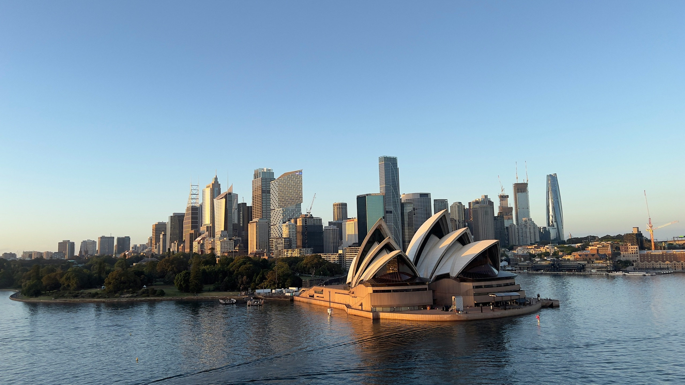
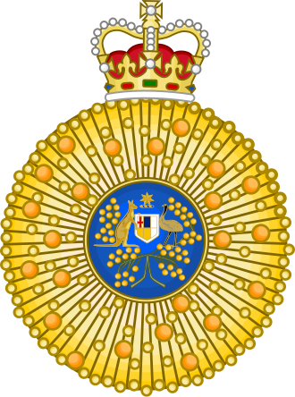

市場参入戦略・アドバイザリー
KBAは、クライアントが進め方を決める前に事業評価を検証し、市場参入の選択肢を比較検討するために必要な背景知識、判断力、人脈を提供します。
サービスを見る Kokusai Business
Kokusai Business戦略アドバイザリー
Kokusai Business Advisoryは、オーストラリアと日本の企業・団体に、最も重要な局面、すなわち両国市場にまたがる経営判断を下す前の段階で、独立した戦略的助言を提供します。
決定の前に、構想をご相談ください
数十年にわたる日豪ビジネスを通じて培われた知見と経験
日豪関係への貢献により、プリンシパル個人が公式に顕彰されています
オーストラリアと日本を拠点とするKBAのプリンシパルの経験と視点を、ひとつのアドバイザリー関係を通じて提供します
取引の成立に左右されず、クライアントの利益を第一に考えます
KBAは、初期の評価から既存事業の運営まで、あらゆる段階で助言を行います。オーストラリアと日本の双方で培ったプリンシパルの相互補完的な経験と人脈により、クライアントだけでは気づきにくい事業機会や関係を見いだし、創出します。
KBAの戦略アドバイザリーサービスを見るKBAは、クライアントが進め方を決める前に事業評価を検証し、市場参入の選択肢を比較検討するために必要な背景知識、判断力、人脈を提供します。
サービスを見るKBAは公開情報にとどまらず、戦略・経営陣・企業文化の適合性、そして組織同士が長期にわたり効果的に協働できるかを見極めます。
サービスを見る多くのクロスボーダー投資が最も脆弱になるのは、取引完了後です。KBAはまさにその段階を支援します。日豪双方の経営慣行への理解を生かし、違いが円滑な統合の障壁となる前に対処します。
サービスを見る両国での取締役・経営幹部としての経験を生かし、KBAは日豪共同出資の企業に対し、経営陣と従業員、本社と現地経営陣の関係改善を通じて組織がより良く機能するよう支援するとともに、事業の成長も支援します。
サービスを見る日豪のビジネス界、政府、諸機関との長年の関わりにより、クライアントは両国の政府・ビジネスのあらゆるレベルに広がる、KBAの信頼に基づく幅広いネットワークを活用できます。
サービスを見る事業機会の模索、市場参入、パートナーシップの構築、既存事業の運営のいずれにおいても、計画が固まる前、他のアドバイザーを起用する前の初期段階からKBAにご相談いただくことで、最大の価値を得ていただけます。
オーストラリアと日本の双方にプリンシパルを擁するKBAは、数十年にわたり両国関係に携わってきました。そのため、期待値、意思決定、商習慣が両国でどう異なるかを理解しており、市場参入、関係構築、成長戦略の策定、アドバイザーの選定を支援するとともに、誤解が意思決定や関係に影響する前にそれを予見できるよう支援します。
異文化ビジネスの相互理解KBAの助言は、取引の成否に左右されません。プリンシパルは前提、タイミング、スキームを厳しく検証し、精査に耐えない案件については見送りを助言します。
クライアントはKBAをチームとして起用します。プリンシパルは、その総合的な専門知識と人脈を結集してクライアントを支援します。
KBAには、オーストラリアと日本を拠点とする日豪のリーダーが集まっています。日豪関係を形づくる企業、取締役会、諸機関において、数十年にわたる経験と人脈を有しています。
KBAのプリンシパルを紹介
KBAのプリンシパルは、両国関係に関わる主要企業の経営や助言において数十年の経験と人脈を有しています。Australia-Japan Roundtableを設立し、25年間で200回以上のイベントを通じて主導してきたこともその一つです。こうした活動を通じて、両国のビジネス界や諸機関との関係を築いてきました。
KBAの助言は、国際的に事業を展開する日豪企業を率い、あるいは助言してきたプリンシパルの経営経験に基づいています。
主要な国際機関でのキャリアや役員経験に加え、投資、経済、法律、行政の経歴を併せ持つことで、KBAは学際的な視点を備えています。
KBAのプリンシパルは、日豪関係の中核を担う団体や取り組みにおいて長年にわたり役職を務めてきました。また、一部のプリンシパルは、いずれか一方または両国の政府から顕彰を受けています。
所属団体・顕彰所属団体
叙勲


KBAの業務には、チームが見いだした事業機会のクライアントへの紹介、パートナーシップや合弁事業の組成支援、関係再構築の支援、そして見送りがクライアントの利益になるとKBAが判断した場合の意思決定支援が含まれます。
KBAの実績戦略目標について、KBAのプリンシパルにご相談ください。
KBAに相談する